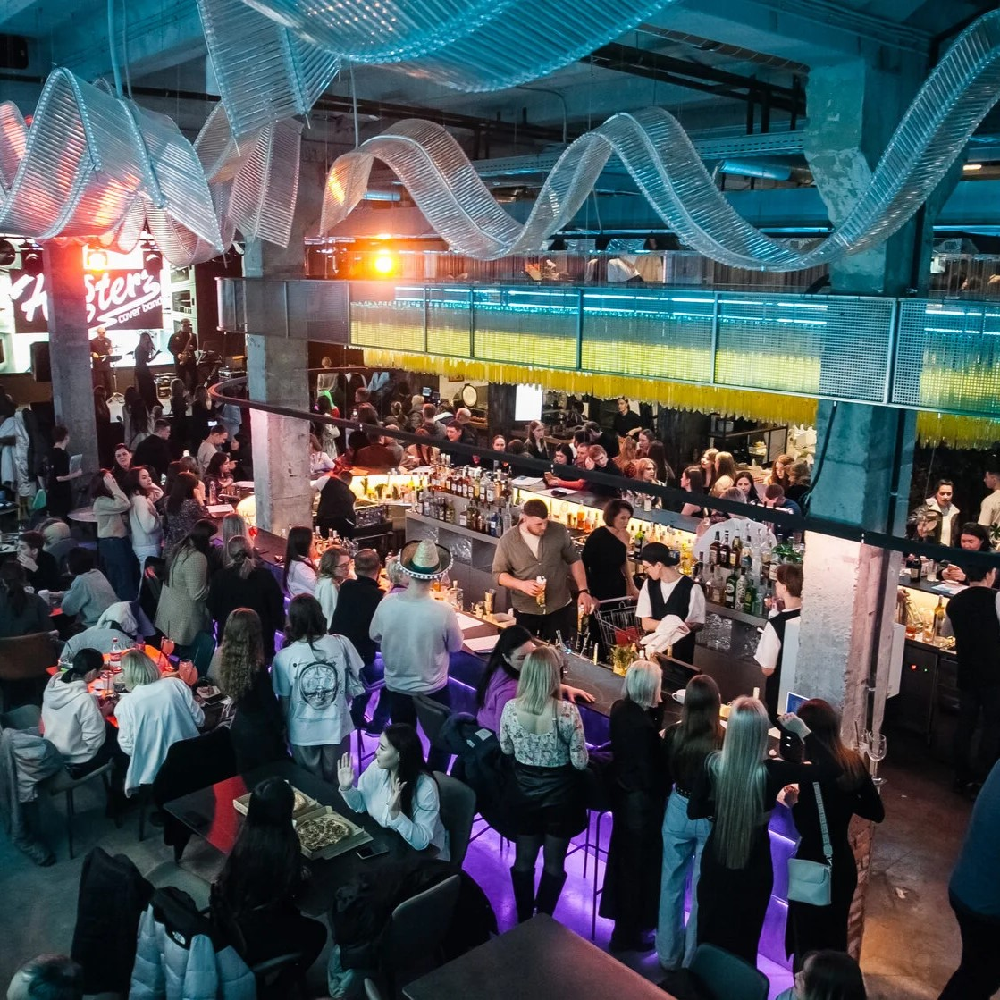
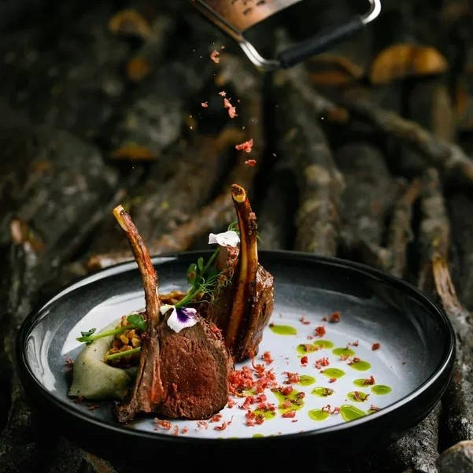
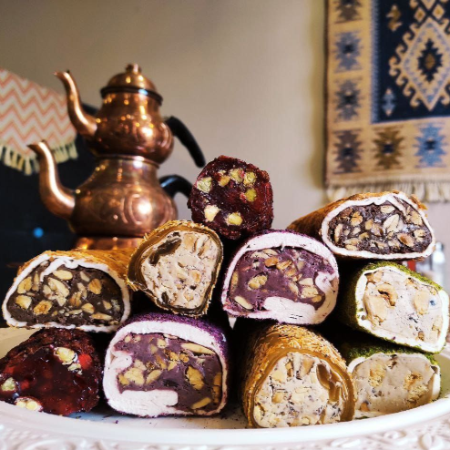
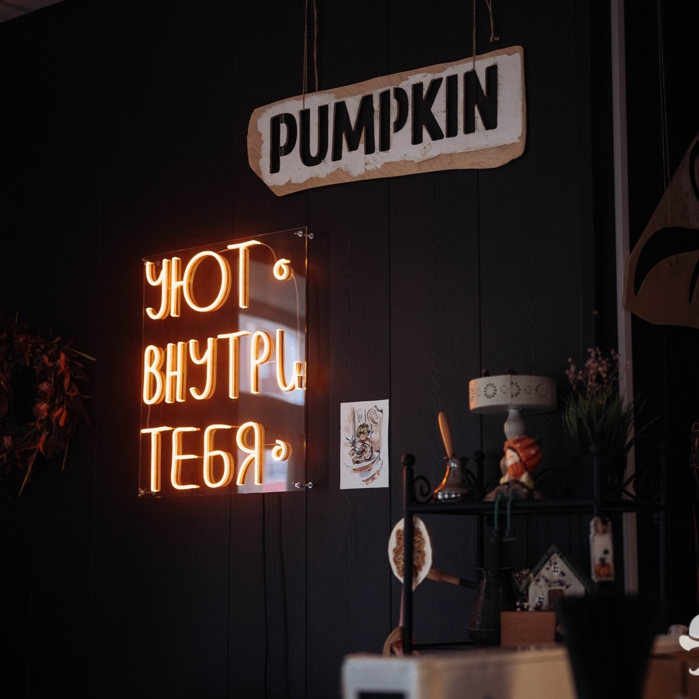
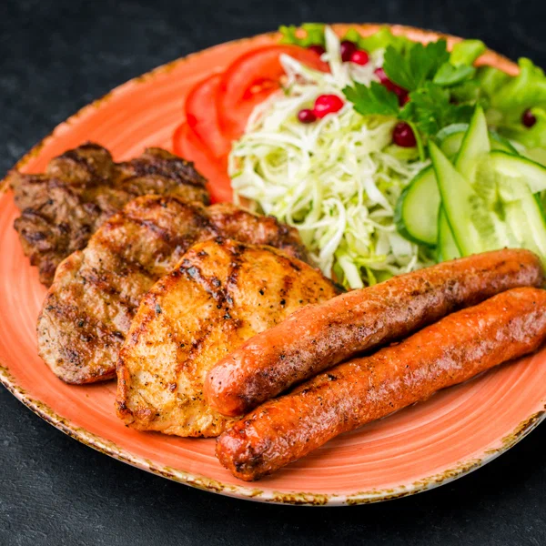

-
 4.6
Лампочка
Ул. Белинского, 41
Современное городское пространство с историческом контекстом. Гастрохолл состоит из 25 заведений
-
 4.4
4.4
Break me fast
Ул. Советская, 80
Самые вкусные круассаны города именно здесь. Завтраки весь день
-
 4.4
Нарым
Ул. Белинского, 41
Ресторан северной кухни в авторской интерпретации. Акцент сделан на дичи и блюдах из рыбы
-
 4.8
İstanbul
Пр. Фрунзе, 35
Турецкий ресторан с аутентичной атмосферой
-
 4.8
Pumpkin
Ул. Советская, 110
Ламповая кофейня-кондитерская, откуда не хочется уходить. Рекомендуется попробовать авторский кофе «Амели».
-
 5.0
Харди Гарди
Ул. Красноармейская, 31
Гриль - бар, предлагающее хорошо продуманное гриль-меню, ориентированное на вкусы настоящих гурманов, дружелюбный сервис и приятную атмосферу, располагающую к общению
Сувениры
Из Томска можно привезти несколько сувениров — не только памятных, но и полезных!
Кедровые орехи
Томск считается родиной кедров. Местным кедровые орешки привычны, но для обитателей отдалённых регионов они представляют необычное лакомство.
Магниты в виде окон деревянных домов.
Колоритные избушки — одна из томских визитных карточек. Поэтому и магниты здесь нетривиальные — в виде резных деревянных окошек.
Медвежьи стельки
Их стоимость — 800 рублей за пару, зато греть будут всю зиму. Пусть даже она и не будет такой суровой, как в Томске. Купить можно на рынках.
Места, где можно купить сувениры:
Tommy Gifts
Проспект Фрунзе, 11Б
Славбазар
ул. Загорная, 12
Томские Сувениры
проспект Ленина, 91
Томская Деревянная Лошадка
улица Герцена, 72А